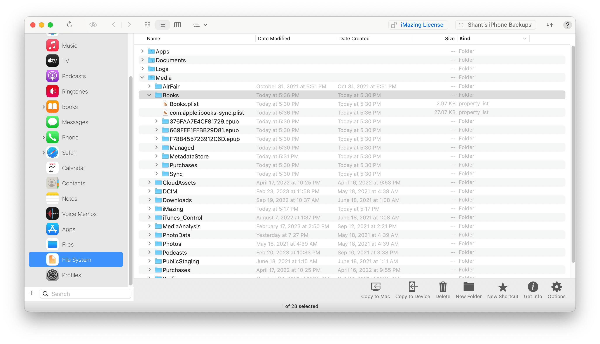
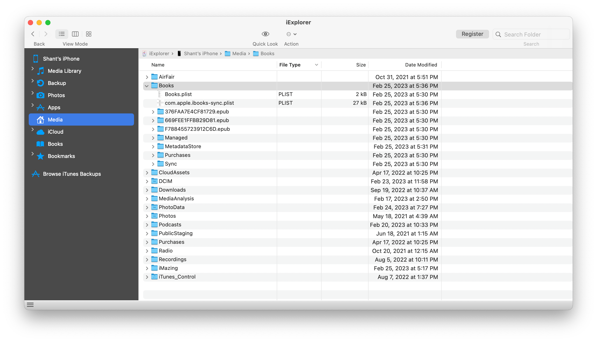

iOS - Access Library
There are roughly two different methods for accessing iOS's Apple Books
library. A (possibly-paid) third party application or manually mounting the
device with macFUSE / ifuse.
Access via Third-party Applications
There are a number of third-party applications that grant access to an iOS device's filesystem. For the most part, they all expose the same directories, however, each might differ slightly in how they are represented in the GUI.
The following is a non-exhaustive list of paid software and the library's location within them:
iMazing - https://imazing.com

iExplorer - https://macroplant.com/iexplorer

Access via macFUSE / ifuse
The free and open-source option requires a bit of work during installation but is effortless to run once complete.
Note that this has only been tested on Apple Silicon running macOS Ventura.
Requirements
-
Install Homebrew. See here for installation instructions.
-
Install
macFUSE. See here for installation instructions asmacFUSErequires enabling support for third party kernel extensions and will require a restart. -
Install
ifusebrew install gromgit/fuse/ifuse-macRunning
brew install ifuseis broken as of 2023-02-05.
Mount the Device
First we create a mount point. This can be anywhere and named anything.
mkdir /tmp/my-device
Mount a Single Device
If only a single device is connected, it can be mounted by simply running:
ifuse /tmp/my-device
Mount Multiple Devices
If there are multiple devices connected, a specific one can be mounted using
its serial number. Assuming the device is an iPhone, run the following
command:
system_profiler SPUSBDataType -detailLevel mini | grep -e iPhone -e Serial
Something similar to the following will print out. The 24-character string is the device's serial number.
iPhone:
Serial Number: XXXXXXXXXXXXXXXXXXXXXXXX
Serial Number: 000000000000
To convert it to a UDID add a hyphen after the eight character.
XXXXXXXX-XXXXXXXXXXXXXXXX
Finally, to mount the device, pass it to the command after the --udid flag to
mount it:
ifuse /tmp/my-device --udid XXXXXXXX-XXXXXXXXXXXXXXXX
Troubleshooting
ifusemight complain:Invalid device UDID specified, length needs to be 40 characters. Starting with the iPhone X, Apple changedUDIDs to use 24 bytes and a dash (-) instead of the old 40-byte format.If you get
Failed to connect to lockdownd service on the device. Try again. If it still fails try rebooting your device.ensure that your device is connected, and isn't displaying a "Trust this computer" dialog. You'll need to approve that first. If you then getERROR: Device 000000000000000000000000 returned unhandled error code -13you'll need to disconnect and reconnect the device.
https://reincubate.com/support/how-to/mount-iphone-files/